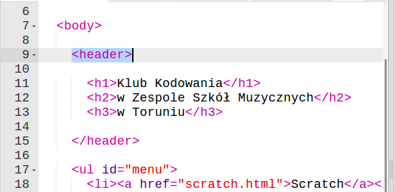

Wstęp
Dzisiaj zobaczysz kilka dodatkowych elementów, które mogą pomóc ci w zbudowaniu odpowiedniej struktury strony.
Struktura
Zadania do wykonania
-
Do tej pory do określania struktury naszej strony używaliśmy znaczników
divisection. HTML posiada jednak kilka znaczników, które w specjalny sposób opisują ich zawartość. Pierwszym znacznikiem o takiej specjalnej roli jestmain. Możesz użyć go tak jak znacznikadiv, jednak na twojej stronie może być tylko jedenmain.mainpowinien zawierać w sobie całą unikalną treść strony, tzn. wszystkie paragrafy, listy, tabele, tytuły. Nie powinien jednak zawierać nagłówka strony i stopki, jeśli strona taką posiada.Dodajmy
maindo naszej strony:Zobacz, że
mainobjął całą treść, poza nagłówkiem i menu, dla nich mamy przygotowane inne znaczniki. -
Zacznijmy od nagłówka. Każda strona i każda sekcja na stronie może mieć nagłówek, oznacza się go znacznikiem
header:
headerw naszym przypadku objął główny tytuł strony i znajduje się przed znacznikiemmain. -
A co z nawigacją? Dla niej istnieje znacznik
nav: -
Poza tym mamy także znacznik
footer, który obejmuje zazwyczaj stopkę na stronie www. Stopka to takie miejsce, w którym można zamieścić mniej istotne informacje o stronie, np. datę utworzenia, kontakt do administratora, linki do strony głównej itp.Dodajmy stopkę:
-
Stopka nie wygląda zbyt ładnie, dodajmy do niej style. Style dla stopki, nagłówka,
mainczy nawigacji można dodawać tak samo jak do każdego innego elementu. Te znaczniki mogą też posiadać klasy i id, co ułatwia ich stylowanie:
Zapisz swój projekt
Struktura twojej nowej podstrony
Dzisiaj dowiedziałeś się jak w prosty sposób można podzielić twoją stronę internetową na sekcje. Niektóre sekcje mają specjalne role i warto dla nich używać specjalnych znaczników.
Jak pewnie zauważyłeś, wprowadzenie nowych znaczników w większości przypadków nie popsuło niczego na stronie. Kod jest jednak uporządkowany.
Te znaczniki są bardzo ważne dla osób, które mają problemy ze wzrokiem. Osoby takie korzystają z narzędzi czytających zawartość strony internetowej na głos. Narzędzia te dużo lepiej radzą sobie ze stroną, jeśli posiada ona specjalne znaczniki, które dzisiaj poznaliśmy. Z pewnością chcesz, żeby wszyscy mogli poznać zawartość Twojej strony, dlatego ważne jest używanie tych znaczników w poprawny sposób.